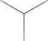

<polymer-element name="hud-menu">
<template>
	<style>
	div#lowerhud { margin: 0 auto; text-align: center; }
	div.btnzone, div.selectorzone { display: inline-block; }
	div.btnrow { 
		margin-bottom: -15px;
	}
	div.btnrowalt { 
		margin-top: -15px;
	}
	div#selector { 
		position: relative; background-size:cover; width: 160px; height: 190px; bottom: 35px;
		display: inline-block; background-image: url(../assets/UI/DisplayBehind.svg);
		margin: 0 -25px; 
	}
	div#selecteditem { position: absolute; left: 5px; right:5px; top: 30%; margin: 0 auto;}
	div#selecteditem > img { position: relative; max-width: 140px; max-height: 170px; width: 50%; height: 50%; }
	img#overselector { position: absolute; top: 48px; left: 0; width: 162px; }
	</style>
	<div id="lowerhud">
	<div class="btnzone">
		<div class="btnrow">
			<hud-button hotkey="2" hkside="left" icon="Map"></hud-button>
			<hud-button hotkey="4" hkside="left" icon="Communications"></hud-button>
		</div>
		<div class="btnrowalt">
			<hud-button hotkey="1" hkside="left" scope="HUD" call="switchCamera" icon="Camera"></hud-button>
			<hud-button hotkey="3" hkside="left"></hud-button>
			<hud-button hotkey="5" hkside="left"></hud-button>
		</div>
	</div>
	<div class="selectorzone">
		<div id="selector">
			<div id="selecteditem"></div>
			
		</div>
	</div>
	<div class="btnzone">
		<div class="btnrow">
			<hud-button hotkey="7" hkside="right"></hud-button>
			<hud-button hotkey="9" hkside="right" toggle="true" icon="EngineOn" switchTo="EngineOff"></hud-button>
		</div>
		<div class="btnrowalt">
			<hud-button hotkey="6" hkside="right"></hud-button>
			<hud-button hotkey="8" hkside="right" icon="Hyperspace"></hud-button>
			<hud-button hotkey="10" hkside="right" toggle="true" icon="Labels" switchTo="LabelsOff"></hud-button>
		</div>
	</div>
	</div>
</template>
<script>Polymer('hud-menu');</script>
</polymer-element>

<polymer-element name="hud-button" attributes="hotkey hkside icon switchTo toggle call scope">
<template>
	<style>
	div.hudButton { 
		position: relative; background-size:cover; width: 60px; height: 70px;
		display: inline-block; background-image: url(../assets/UI/Button.svg); 
		cursor: pointer;
	}
	div.hudButton > img {
		position: absolute; width: 60%; height: 60%; left: 13px; top: 15px;
	}
	div.hotkey { 
		position: absolute; bottom: 13px; font-size: 20px;
		color: rgba(255,255,255,.5); font-family: "Source Sans Pro"; font-weight: 300;
		z-index: 10;
	}
	div.hotkeyleft { left: 3px; }
	div.hotkeyright { right: 3px; }
	</style>
	<div class="hudButton" on-click="trigger">
		
		<div class="hotkey hotkey{{hkside}}">{{hotkey}}</div>
	</div>
</template>
<script>
Polymer('hud-button',{
	hotkey: "",
	hkside: "left",
	icon: "empty",
	toggle: null,
	call: null,
	scope: "window",
	trigger: function () { 
		sp = this.getAttribute("scope");
		fn = this.getAttribute("call");
		if (fn !== null) window[sp][fn]();
	},
	created: function () { 
		sp = this.getAttribute("scope");
		hk = this.getAttribute("hotkey");
		fn = this.getAttribute("call");
		if (hk !== "" && fn !== null)
			window.Hotkeys.push({ key: hk, callback: window[sp][fn], element: this });
	}
});
</script>
</polymer-element>